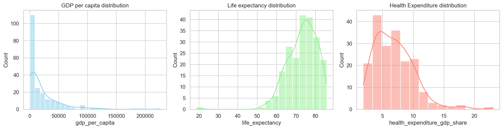
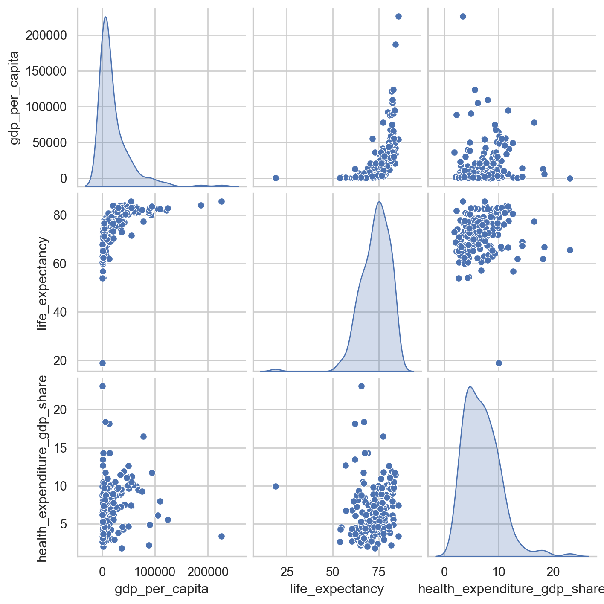
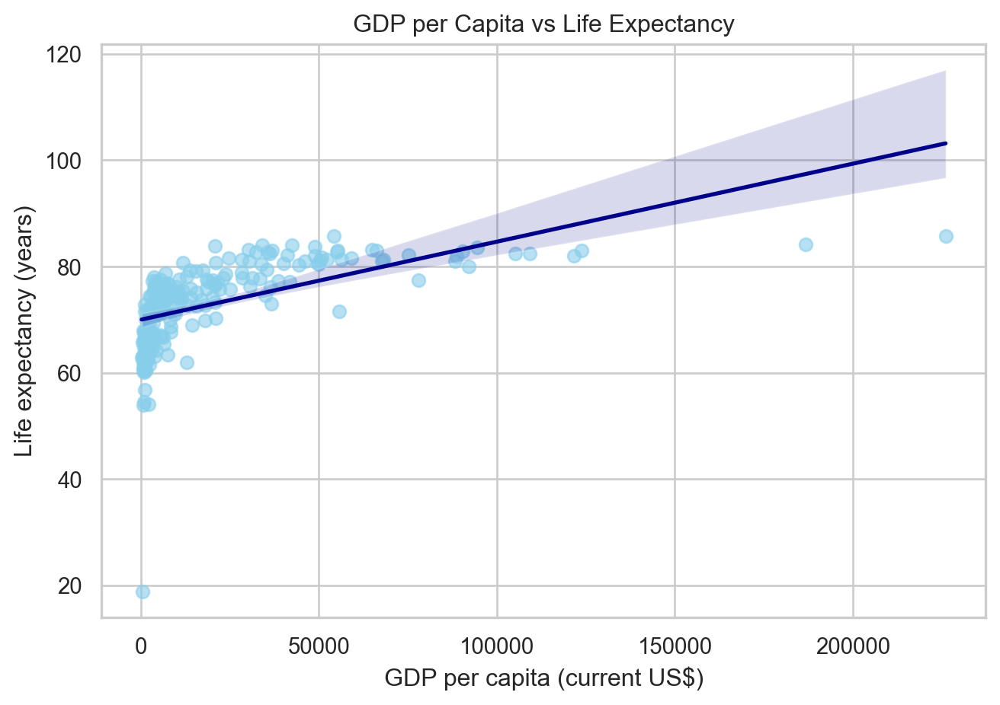
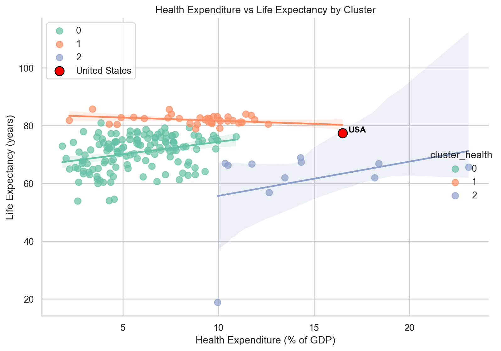

(217, 14)
country inflation_rate exports_gdp_share gdp_growth_rate \
0 Afghanistan 13.712102 18.380042 -6.240172
1 Albania 6.725203 37.197082 4.826696
2 Algeria 9.265516 30.808979 3.600000
gdp_per_capita adult_literacy_rate primary_school_enrolment_rate \
0 357.261153 NaN NaN
1 6846.426694 98.5 96.371231
2 4961.552577 NaN 108.343933
education_expenditure_gdp_share measles_immunisation_rate \
0 NaN 56.0
1 2.744330 86.0
2 4.749247 79.0
health_expenditure_gdp_share income_inequality unemployment_rate \
0 23.088169 NaN 14.100
1 6.193681 NaN 10.137
2 3.623043 NaN 12.346
life_expectancy total_population
0 65.617 40578842.0
1 78.769 2777689.0
2 76.129 45477389.0 qtm-assignment-05
2. Dataset Creation
3. Exploratory Data Analysis
I will analyze the following three indicators from the dataset: 1. GDP per capita 2. Life expectancy 3. Health expenditure as % of GDP
Summary Statistics
Analysis of Table 1:
- GDP per capita shows extremely wide variation, ranging from about $251 to over $226,000.
- The mean ($21,076) is far higher than the median ($7,656), indicating a right-skewed distribution. A few wealthy countries drive up the average while most economies have much lower income per person.
- The large standard deviation ($30,994) confirms strong inequality in economic output across countries.
- Life expectancy values range from 18.8 years to 85.7 years, with a mean of about 73.1 years.
- The interquartile range (67.8 – 78.5) indicates that most countries cluster around 70–80 years.
- The relatively small standard deviation (≈ 7.9) shows that life expectancy is less dispersed than income levels, reflecting global improvements in public health.
- Health expenditure GDP share ranges from 1.8% to 23%.
- Distribution is moderately right-skewed: most countries spend ~4–9% of GDP on health; a small set spend >10%, and a few outliers reach ~23%.
| gdp_per_capita | life_expectancy | health_expenditure_gdp_share | |
|---|---|---|---|
| count | 209.000000 | 217.000000 | 191.000000 |
| mean | 21076.940879 | 73.108020 | 6.883157 |
| std | 30993.910263 | 7.942539 | 3.284450 |
| min | 250.634225 | 18.818000 | 1.817682 |
| 25% | 2620.838043 | 67.788000 | 4.374079 |
| 50% | 7655.594210 | 74.160976 | 6.500235 |
| 75% | 28451.147783 | 78.531000 | 8.825374 |
| max | 226052.001905 | 85.746000 | 23.088169 |
Summary statistics for GPD/capita, life expectancy, and health expenditure (% of gdp).
Correlation Matrices
Table 2 highlights the strength and direction of linear relationships among the three key indicators:
GDP per capita and life expectancy (r = 0.57): This is a moderately strong positive correlation. Countries with higher income/person tend to have longer average lifespans. This makes sense, as higher income levels typically correspond to better access to healthcare, nutrition, and education, all of which improve life expectancy.
GDP per capita and health expenditure (r = 0.145): Weak positive relationship. This shows that richer countries do not necessarily spend a higher share of GDP on health.
Health expenditure and unemployment rate (r = 0.158): Weakly positive. Countries that devote a larger share of GDP to health tend to have slightly higher life expectancy, but it’s far from a strong one-to-one relationship. Spending more doesn’t automatically translate to better outcomes.
Economic wealth is the strongest driver of longevity (r ≈ 0.57). Health spending share has only a minor connection to both GDP and life expectancy. This suggests that quality and efficiency of healthcare matter more than the proportion of GDP allocated to it.
| gdp_per_capita | life_expectancy | health_expenditure_gdp_share | |
|---|---|---|---|
| gdp_per_capita | 1.000000 | 0.572225 | 0.145007 |
| life_expectancy | 0.572225 | 1.000000 | 0.157597 |
| health_expenditure_gdp_share | 0.145007 | 0.157597 | 1.000000 |
Correlation scores between GDP/capita, life expectancy, and health expenditure (% of gdp).
Distributions

As shown in Figure 1, GDP per capita is heavily skewed right, showing large wealth inequalities across countries. Unemployment rate is also skewed right, ranging from 0 to 35%. Life expectancy is the closest to being normally distributed with only a few small outliers below 50.
GDP per capita distribution: Highly right-skewed — the vast majority of countries have relatively low GDP per capita, with a few extremely wealthy outliers (above $100,000). This reflects global income inequality.
Life expectancy distribution: Approximately normal, centered around 70–75 years, with slight left skew from a few low-life-expectancy countries (under 50 years). Outliers on the lower end may correspond to countries with conflict, poor healthcare access, or infectious diseases. This tighter, nearly symmetric distribution shows that health outcomes are less unequal than income — confirming a convergence in global life expectancy.
Health expenditure (% of GDP) distribution: Moderately right-skewed, concentrated between 3–10%, with some countries spending up to 20%+ of GDP on health. Most nations allocate a modest share of their economy to health. The skew suggests that some economies must spend disproportionately more to sustain health outcomes, while others achieve efficiency at lower cost.
4. Visualizations

Figure 2 reinforces that GDP per capita is strongly and positively associated with life expectancy, while both indicators display only weak relationships with health expenditure as a share of GDP. The distributions along the diagonal highlight that income is highly skewed, whereas life expectancy and health spending are more evenly distributed across countries.

Figure 3 shows an upward relationship between GDP per capita and life expectancy. Wealthier nations tend to have longer lifespans, though the relationship flattens for very high-income countries, suggesting diminishing returns from income on health outcomes.
This pattern directly reflects findings from McKinsey Global Institute’s “Pixels of Progress” report (2022), which notes that “an additional dollar of GDP per capita ‘buys’ more life expectancy at lower levels of income: the slope of the curve gets flatter as GDP per capita grows” (Institute 2022).
In other words, improvements in life expectancy are most dramatic in low- and middle-income economies where new income enables access to basic healthcare, sanitation, and nutrition. Once these needs are met, further increases in income yield smaller health gains, and longevity improvements depend more on innovation, public health policy, and system efficiency than on GDP growth alone.

Figure 4, a clustered regression plot, illustrates that the relationship between health expenditure (% of GDP) and life expectancy differs across groups of countries, reflecting disparities in health system efficiency and economic capacity.
Cluster 1 (orange) — High-income, efficient systems: These countries exhibit very high life expectancy (~80–85 years) despite moderate health spending (5–10% of GDP). This aligns with evidence from Our World in Data (2024), which shows that once nations surpass a certain threshold of per capita income, returns to health spending plateau. (Our World in Data 2024) Improvements in longevity depend more on social determinants like education and preventive care than on spending alone.
- Among the orange cluster, the USA is a clear outlier, achieving below average life expectancy for the cluster despite having the highest health expenditure as % of gdp of the cluster and the 4th highest overall. This suports evidence from Our World in Data (2020), which examines why life expectancy in the US is lower than in other rich countries. (Our World in Data 2020)
Cluster 0 (green) — Middle-income, developing systems: The positive slope indicates that higher spending continues to yield incremental gains in life expectancy.
Cluster 2 (blue) — Low-income or inefficient systems: These nations spend a larger share of GDP (10–20%) on healthcare but still face lower life expectancy (~50–70 years).
5. Key Statistics
| Indicator | United States | High-income avg | Global avg |
|---|---|---|---|
| GDP per capita (US$) | 77,860.91 | 69255.110000 | 21,076.94 |
| Life expectancy (years) | 77.43 | 81.280000 | 73.11 |
| Health expenditure (% of GDP) | 16.50 | 8.410000 | 6.88 |
The data in Table 3 highlight a paradox in the relationship between national wealth, health spending, and longevity. Despite being among the richest nations in the world, the United States underperforms in life expectancy relative to both its peers and its spending levels.
- GDP per capita (US$)
The United States’ GDP per capita of $77,861 surpasses the high-income average ($69,255) by roughly 12% and exceeds the global average ($21,077) by more than 270%.
This confirms the USA’s position as a global economic leader, with more than enough financial capacity to fund universal and advanced healthcare systems.
However, as seen in Figure 3, additional gains in income among already wealthy nations yield diminishing improvements in life expectancy, a phenomenon noted in the McKinsey Global Institute’s Pixels of Progress (2022) report. The U.S. has entered this “flat zone” of that curve, where marginal income gains no longer substantially extend life expectancy.
- Life expectancy (years) U.S. life expectancy stands at 77.43 years, which is 3.85 years below the high-income average (81.28 years) and only 4.3 years above the global mean (73.11 years). This modest edge over the global average despite massive wealth underscores inefficiency in translating resources into health outcomes.
In Figure 4, the United States appears as a clear outlier within the high-income (orange) group: It lies to the far right (highest spending), but below the cluster’s regression line, showing lower-than-expected longevity given its economic and health investment levels.
This mirrors Our World in Data (2024) findings showing that the United States spends more yet achieves less in life expectancy than its peers.
- Health expenditure (% of GDP)
The United States spends 16.5% of GDP on healthcare, nearly double the high-income average (8.4%) and more than twice the global average (6.9%). However, this disproportionate spending does not produce better outcomes which may imply poor effectiveness of healthcare spending.
Research from Our World in Data (2024) emphasizes that once countries surpass roughly $5,000–$10,000 GDP per capita, further health gains depend less on spending volume and more on efficiency, equity, and public health infrastructure, explaining why the U.S. underperforms relative to its investment.
References
Institute, McKinsey Global. 2022. “The Relationship Between Income and Health.” https://www.mckinsey.com/mgi/our-research/pixels-of-progress-chapter-3. https://www.mckinsey.com/mgi/our-research/pixels-of-progress-chapter-3.
Our World in Data. 2020. “Why Is Life Expectancy in the US Lower Than in Other Rich Countries?” https://ourworldindata.org/us-life-expectancy-low#:~:text=The%20unequal%20development%20over%20recent,US%20will%20continue%20this%20year.
———. 2024. “Life Expectancy Vs Health Expenditure.” https://ourworldindata.org/grapher/life-expectancy-vs-health-expenditure. https://ourworldindata.org/grapher/life-expectancy-vs-health-expenditure.